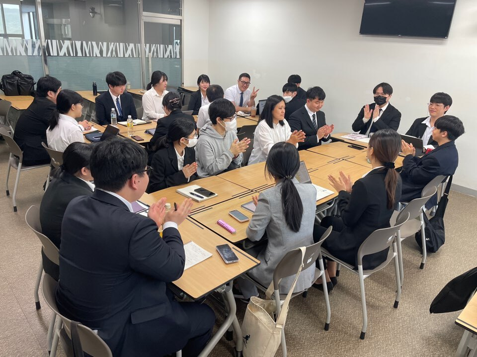
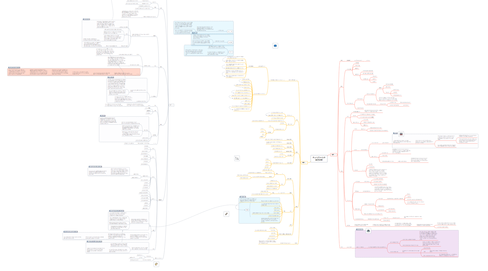
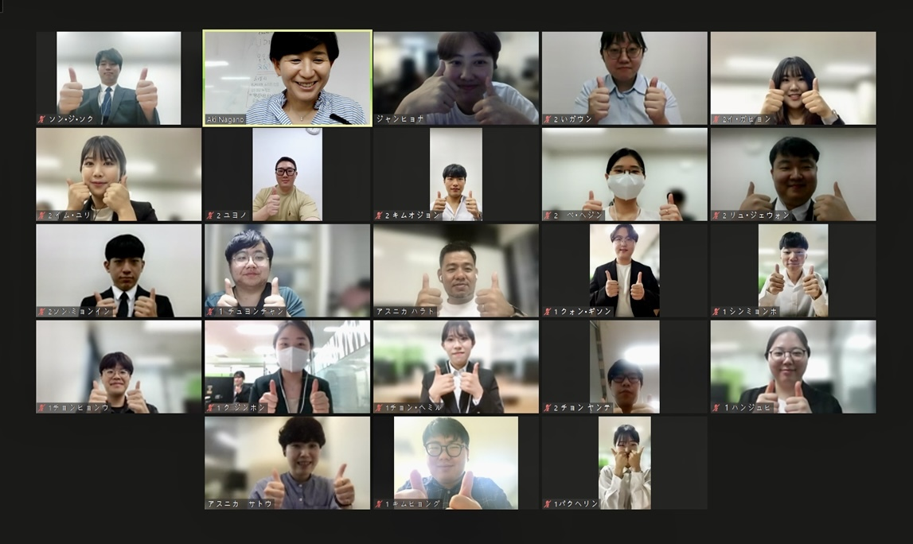

青海進は毎年大学で実施している海外就職プログラムです。今年の青海進は四月から初めて、 1. 情報処理技師の勉強 2. 自己分析、履歴書の作成、模擬面接を通しての就活の準備 3. 大学と連係している企業と説明会や座談会 4. 日本の企業文化の授業を通しての現地適応練習 5. Javaとチームプロジェクトと通してのITスキル習得
その他、様々な活動をしております。日本語やITスキルが足りない学生たちも参加できることが日本のポテンシャル文化と似ていると思います。青海進に参加する学生たちは皆日本現地で長期滞在を希望している人々なので、真面目な姿勢で研修に参加している優秀な人材です。みんな内定を貰うためにお互いに協力しております。もう内定を貰った人も研修過程に一所懸命に参加するかっこいい仲間たちです！
